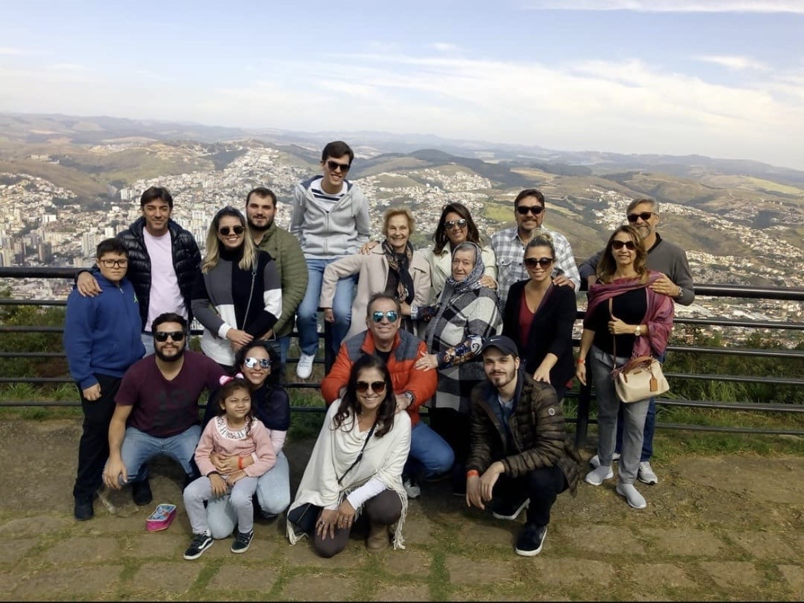
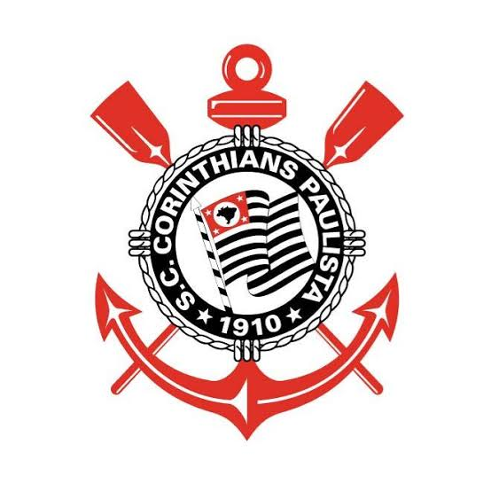
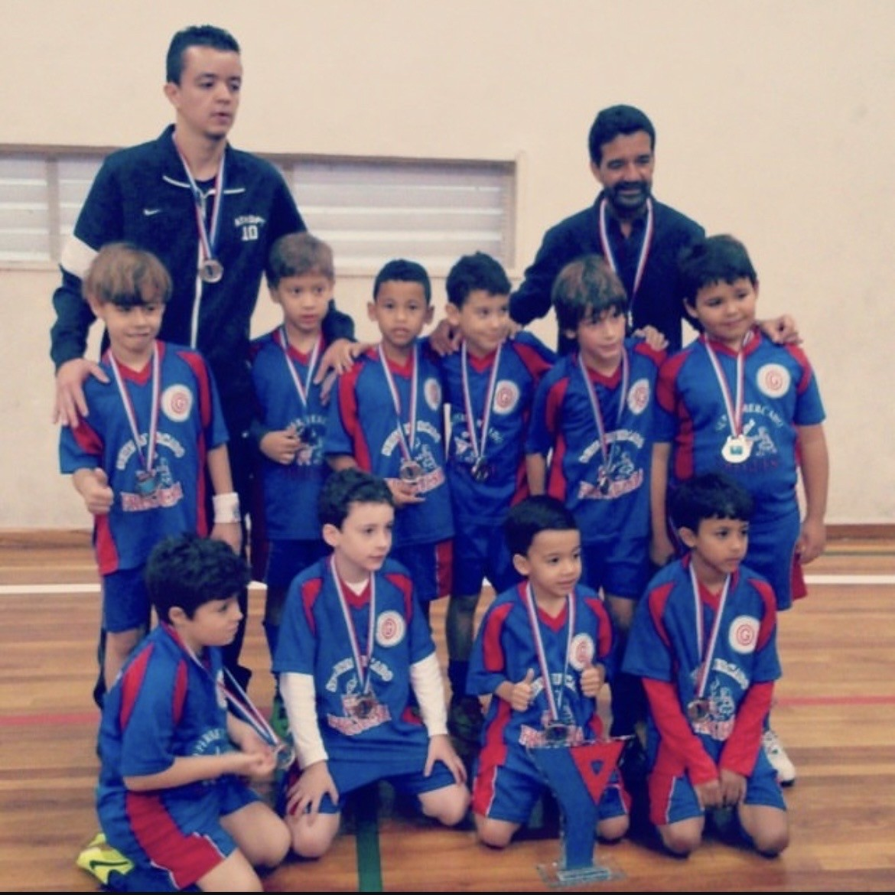

Desde que me entendo por gente, o futebol sempre fez parte da minha vida. Minha família é formada por palmeirenses fanáticos, e cresci acompanhando jogos, vivendo a emoção de cada partida e compartilhando momentos marcantes em frente à televisão. Apesar dessa forte influência, com o tempo desenvolvi minha própria paixão e escolhi torcer para o Corinthians. Foi no Timão que encontrei uma identificação única, tanto pela história de luta e superação quanto pela torcida apaixonada, que me fez perceber que esse era o clube que eu levaria para a vida toda.

O Sport Club Corinthians Paulista foi fundado em 1º de setembro de 1910, no bairro do Bom Retiro, em São Paulo, por um grupo de operários. Inspirado no time inglês Corinthian FC, o clube nasceu com o objetivo de representar o povo. Ao longo de sua história, tornou-se um dos maiores clubes do Brasil, conquistando títulos importantes, como o Mundial de Clubes da FIFA, a Copa Libertadores, o Campeonato Brasileiro e a Copa do Brasil, além de possuir uma das maiores torcidas do mundo.

O Corinthians é muito mais do que um time para mim. Os valores de raça, superação e humildade que o clube representa ajudaram a formar meu caráter e a maneira como enfrento os desafios da vida. Sou apaixonado pelo Timão e acompanho tudo o que acontece com o clube. Não consigo passar um dia sem ver uma notícia ou acompanhar alguma novidade. Ser corinthiano faz parte de quem eu sou e da minha história.